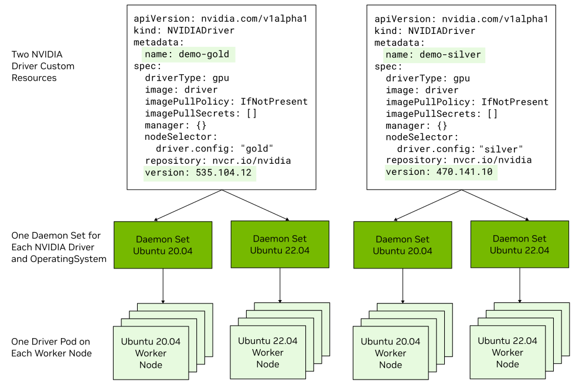

NVIDIA GPU Driver Custom Resource Definition#
Overview of the GPU Driver Custom Resource Definition#
Note
Technology Preview features are not supported in production environments and are not functionally complete. Technology Preview features provide early access to upcoming product features, enabling customers to test functionality and provide feedback during the development process. These releases may not have any documentation, and testing is limited.
This feature does not support an upgrade from an earlier version of the NVIDIA GPU Operator. You must uninstall an existing installation and then install the Operator again. Uninstalling the Operator interrupts services and applications that require access to NVIDIA GPUs.
As a technology preview feature, you can create one or more instances of an NVIDIA driver custom resource to specify the NVIDIA GPU driver type and driver version to configure on specific nodes. You can specify labels in the node selector field to control which NVIDIA driver configuration is applied to specific nodes.
Comparison: Managing the Driver with CRD versus the Cluster Policy#
Before the introduction of the NVIDIA GPU Driver custom resource definition, you manage the driver by modifying the driver field and subfields of the cluster policy custom resource definition.
The key differences between the two approaches are summarized in the following table.
Cluster Policy CRD |
NVIDIA Driver CRD |
|---|---|
|
|
Driver Daemon Sets#
The NVIDIA GPU Operator starts a driver daemon set for each NVIDIA driver custom resource and each operating system version.
For example, if your cluster has one NVIDIA driver custom resource that specifies a 535 branch GPU driver and some worker nodes run Ubuntu 20.04 and other worker nodes run Ubuntu 22.04, the Operator starts two driver daemon sets. One daemon set configures the GPU driver on the Ubuntu 20.04 nodes and the other configures the driver on the Ubuntu 22.04 nodes. All the nodes run the same 535 branch GPU driver.
If you choose to use precompiled driver containers, the Operator starts a driver daemon set for each Linux kernel version.
For example, if some nodes run Ubuntu 22.04 and the 5.15.0-84-generic kernel, and other nodes run the 5.15.0-78-generic kernel, then the Operator starts two daemon sets.
About the Default NVIDIA Driver Custom Resource#
By default, the helm chart configures a default NVIDIA driver custom resource during installation. This custom resource does not include a node selector and as a result, the custom resource applies to every node in your cluster that has an NVIDIA GPU. The Operator starts a driver daemon set and pods for each operating system version in your cluster.
If you plan to configure your own driver custom resources to specify driver versions, types, and so on, then you might prefer to avoid installing the default custom resource. By preventing the installation, you can avoid node selector conflicts due to the default custom resource matching all nodes and your custom resources matching some of the same nodes.
To prevent configuring the default custom resource, specify the --set driver.nvidiaDriverCRD.deployDefaultCR=false
argument when you install the Operator with Helm.
Feature Compatibility#
- Driver type
Each NVIDIA driver custom resource specifies the driver type and is one of
gpu,vgpu, orvgpu-host-manager. You can run the data-center driver (gpu) on some nodes and the vGPU driver on other nodes.- GPUDirect RDMA and GPUDirect Storage
Each NVIDIA driver custom resource can specify how to configure GPUDirect RDMA and GPUDirect Storage (GDS). Refer to GPUDirect RDMA and GPUDirect Storage for the platform support and prerequisites.
- GDRCopy
Each NVIDIA driver custom resource can enable the GDRCopy sidecar container in the driver pod.
- Precompiled and signed drivers
You can run the default driver type that is compiled when the driver pod starts on some nodes and precompiled driver containers on other nodes. The Limitations and Restrictions for precompiled driver containers apply.
- Preinstalled drivers on nodes
If a node has an NVIDIA GPU driver installed in the operating system, then no driver container runs on the node.
- Support for X86_64 and ARM64
Each daemon set can run pods and driver containers for the X86_64 and ARM64 architectures. Refer to the NVIDIA GPU Driver tags web page to determine which driver version and operating system combinations support both architectures.
About the NVIDIA Driver Custom Resource#
An instance of the NVIDIA driver custom resource represents a specific NVIDIA GPU driver type and driver version to install and manage on nodes.
apiVersion: nvidia.com/v1alpha1
kind: NVIDIADriver
metadata:
name: demo-gold
spec:
driverType: gpu
gdrcopy:
enabled: false
repository: nvcr.io/nvidia/cloud-native
image: gdrdrv
version: v2.4.1
imagePullPolicy: IfNotPresent
imagePullSecrets: []
env: []
args: []
image: driver
imagePullPolicy: IfNotPresent
imagePullSecrets: []
kernelModuleType: auto
manager: {}
nodeSelector:
driver.config: "gold"
rdma:
enabled: false
useHostMofed: false
gds:
enabled: false
repository: nvcr.io/nvidia
startupProbe:
failureThreshold: 120
initialDelaySeconds: 60
periodSeconds: 10
timeoutSeconds: 60
usePrecompiled: false
version: 535.104.12
The following table describes some of the fields in the custom resource.
Field |
Description |
Default Value |
|---|---|---|
|
Specifies the name of the NVIDIA driver custom resource. |
None |
|
Specifies a map of key and value pairs to add as custom annotations to the driver pod. |
None |
|
Specifies one of the following:
|
|
|
Specifies environment variables to pass to the driver container. |
None |
|
Specifies whether to deploy the GDRCopy Driver.
When set to |
|
|
Specifies whether to enable GPUDirect Storage. |
|
|
Specifies the driver container image name. |
|
|
Specifies the policy for kubelet to download the container image. Refer to the Kubernetes documentation for image pull policy. |
Refer to the Kubernetes documentation. |
|
Specifies the credentials to provide to the registry if the registry is secured. |
None |
|
Specifies the type of the NVIDIA GPU Kernel modules to use.
Valid values are
|
|
|
Specifies a map of key and value pairs to add as custom labels to the driver pod. |
None |
|
Specifies one or more node labels to match. The driver container is scheduled to nodes that match all the labels. |
None. When you do not specify this field, the driver custom resource selects all nodes. |
|
Specifies the priority class for the driver pod. |
|
|
Specifies whether to enable GPUDirect RDMA. |
|
|
Specifies the container registry that contains the driver container. |
|
|
This field is deprecated as of v25.3.0 and will be ignored. Use |
|
|
Specifies a set of tolerations to apply to the driver pod. |
None |
|
When set to |
|
|
Specifies the GPU driver version to install.
For a data-center driver, specify a value like |
Refer to the GPU Operator Component Matrix. |
Installing the NVIDIA GPU Operator#
Perform the following steps to install the GPU Operator and use the NVIDIA driver custom resources.
Optional: If you want to run more than one driver type or version in the cluster, label the worker nodes to identify the driver type and version to install on each node:
Example
$ kubectl label node <node-name> --overwrite driver.version=525.125.06
To use a mix of driver types, such as vGPU, label nodes for the driver type.
To use a mix of driver versions, label the nodes for the different versions.
To use a mix of conventional drivers and precompiled driver containers, label the nodes for the different types.
Install the Operator.
Add the NVIDIA Helm repository:
$ helm repo add nvidia https://helm.ngc.nvidia.com/nvidia \ && helm repo update
Install the Operator and specify at least the
--set driver.nvidiaDriverCRD.enabled=trueargument:$ helm install --wait --generate-name \ -n gpu-operator --create-namespace \ nvidia/gpu-operator \ --version=v25.3.4 --set driver.nvidiaDriverCRD.enabled=true
By default, Helm configures a
defaultNVIDIA driver custom resource during installation. To prevent configuring the default custom resource, also specify--set driver.nvidiaDriverCRD.deployDefaultCR=false.
Apply NVIDIA driver custom resources manifests to install the NVIDIA GPU driver version, type, and so on for your nodes. Refer to the sample manifests.
Sample NVIDIA Driver Manifests#
One Driver Type and Version on All Nodes#
Optional: Remove previously applied node labels.
Create a file, such as
nvd-all.yaml, with contents like the following:apiVersion: nvidia.com/v1alpha1 kind: NVIDIADriver metadata: name: demo-all spec: driverType: gpu image: driver imagePullPolicy: IfNotPresent imagePullSecrets: [] manager: {} rdma: enabled: false useHostMofed: false gds: enabled: false repository: nvcr.io/nvidia startupProbe: failureThreshold: 120 initialDelaySeconds: 60 periodSeconds: 10 timeoutSeconds: 60 usePrecompiled: false version: 535.104.12
Tip
Because the manifest does not include a
nodeSelectorfield, the driver custom resource selects all nodes in the cluster that have an NVIDIA GPU.Apply the manfiest:
$ kubectl apply -n gpu-operator -f nvd-all.yamlOptional: Monitor the progress:
$ kubectl get events -n gpu-operator --sort-by='.lastTimestamp'
Multiple Driver Versions#
Label the nodes.
On some nodes, apply a label like the following:
$ kubectl label node <node-name> --overwrite driver.config="gold"
On other nodes, apply a label like the following:
$ kubectl label node <node-name> --overwrite driver.config="silver"
Create a file, such as
nvd-driver-multiple.yaml, with contents like the following:apiVersion: nvidia.com/v1alpha1 kind: NVIDIADriver metadata: name: demo-gold spec: driverType: gpu env: [] image: driver imagePullPolicy: IfNotPresent imagePullSecrets: [] manager: {} nodeSelector: driver.config: "gold" repository: nvcr.io/nvidia version: "535.104.12" --- apiVersion: nvidia.com/v1alpha1 kind: NVIDIADriver metadata: name: demo-silver spec: driverType: gpu env: [] image: driver imagePullPolicy: IfNotPresent imagePullSecrets: [] manager: {} nodeSelector: driver.config: "silver" repository: nvcr.io/nvidia version: "470.141.10"
Apply the manfiest:
$ kubectl apply -n gpu-operator -f nvd-driver-multiple.yamlOptional: Monitor the progress:
$ kubectl get events -n gpu-operator --sort-by='.lastTimestamp'
One Precompiled Driver Container on All Nodes#
Optional: Remove previously applied node labels.
Create a file, such as
nvd-precompiled-all.yaml, with contents like the following:apiVersion: nvidia.com/v1alpha1 kind: NVIDIADriver metadata: name: demo-precomp-all spec: driverType: gpu env: [] image: driver imagePullPolicy: IfNotPresent imagePullSecrets: [] manager: {} nodeSelector: {} repository: nvcr.io/nvidia resources: {} usePrecompiled: true version: "535"
Tip
Because the manfiest does not include a
nodeSelectorfield, the driver custom resource selects all nodes in the cluster that have an NVIDIA GPU.Apply the manfiest:
$ kubectl apply -n gpu-operator -f nvd-precompiled-all.yamlOptional: Monitor the progress:
$ kubectl get events -n gpu-operator --sort-by='.lastTimestamp'
Precompiled Driver Container on Some Nodes#
Label the nodes like the following sample:
$ kubectl label node <node-name> --overwrite driver.precompiled="true" $ kubectl label node <node-name> --overwrite driver.version="535"
Create a file, such as
nvd-precomiled-some.yaml, with contents like the following:apiVersion: nvidia.com/v1alpha1 kind: NVIDIADriver metadata: name: demo-precomp spec: driverType: gpu env: [] image: driver imagePullPolicy: IfNotPresent imagePullSecrets: [] manager: {} nodeSelector: driver.precompiled: "true" driver.version: "535" repository: nvcr.io/nvidia resources: {} usePrecompiled: true version: "535"
Apply the manfiest:
$ kubectl apply -n gpu-operator -f nvd-precompiled-some.yamlOptional: Monitor the progress:
$ kubectl get events -n gpu-operator --sort-by='.lastTimestamp'
Upgrading the NVIDIA GPU Driver#
You can upgrade the driver version by editing or patching the NVIDIA driver custom resource.
When you update the custom resource, the Operator performs a rolling update of the pods in the affected daemon set.
Update the
driver.versionfield in the driver custom resource:$ kubectl patch nvidiadriver/demo-silver --type='json' \ -p='[{"op": "replace", "path": "/spec/version", "value": "525.125.06"}]'
Optional: Monitor the progress:
$ kubectl get pods -n gpu-operator -l app.kubernetes.io/component=nvidia-driver
Example Output
NAME READY STATUS RESTARTS AGE nvidia-gpu-driver-ubuntu20.04-788484b9bb-6zhd9 1/1 Running 0 5m1s nvidia-gpu-driver-ubuntu22.04-8896c4bf7-7s68q 1/1 Terminating 0 37m nvidia-gpu-driver-ubuntu22.04-8896c4bf7-jm74l 1/1 Running 0 37m
Eventually, the Operator replaces the pods that used the previous driver version with pods that use the updated driver version.
Troubleshooting#
If the driver daemon sets and pods are not running as you expect, perform the following steps.
Display the NVIDIA driver custom resources:
$ kubectl get nvidiadriversExample Output
NAME STATUS AGE default notReady 2023-10-13T14:03:24Z demo-precomp notReady 2023-10-13T14:21:55Z
It is normal for the status to report not ready shortly after modifying the resource.
If the status is not ready, describe the resource:
$ kubectl describe nvidiadriver demo-precompExample Output
Name: demo-precomp ... Version: 535.104.05 Status: Conditions: Last Transition Time: 2023-10-13T14:33:30Z Message: Reason: Error Status: False Type: Ready Last Transition Time: 2023-10-13T14:33:30Z Message: Waiting for driver pod to be ready Reason: DriverNotReady Status: True Type: Error State: notReady
Display the node selectors for the driver daemon sets. The selectors are set from the NVIDIA driver custom resources:
$ kubectl get -n gpu-operator ds -l app.kubernetes.io/component=nvidia-driver
Example Output
NAME DESIRED CURRENT READY UP-TO-DATE AVAILABLE NODE SELECTOR AGE nvidia-gpu-driver-ubuntu20.04-788484b9bb 1 1 1 1 1 driver.config=silver,feature.node.kubernetes.io/system-os_release.ID=ubuntu,feature.node.kubernetes.io/system-os_release.VERSION_ID=20.04,nvidia.com/gpu.deploy.driver=true,nvidia.com/gpu.present=true 10m nvidia-gpu-driver-ubuntu22.04-8896c4bf7 2 2 2 2 2 driver.config=gold,feature.node.kubernetes.io/system-os_release.ID=ubuntu,feature.node.kubernetes.io/system-os_release.VERSION_ID=22.04,nvidia.com/gpu.deploy.driver=true,nvidia.com/gpu.present=true 10m
View the logs from the GPU Operator pod:
$ kubectl logs -n gpu-operator deployment/gpu-operatorExample Output
{"level":"info","ts":1697223780.333307,"logger":"controllers.Upgrade","msg":"Node hosting a driver pod","node":"worker-2","state":"upgrade-done"} {"level":"info","ts":1697223780.3376482,"logger":"controllers.Upgrade","msg":"Node hosting a driver pod","node":"worker-1","state":"upgrade-done"} {"level":"info","ts":1697223780.345211,"logger":"controllers.Upgrade","msg":"Node hosting a driver pod","node":"worker-0","state":"upgrade-done"} {"level":"error","ts":1697223780.3452845,"logger":"controllers.Upgrade","msg":"Failed to build node upgrade state for pod","pod":{"namespace":"gpu-operator","name":"nvidia-gpu-driver-ubuntu22.04-6d4df6b96f-c6hfd"},"error":"unable to get node : resource name may not be empty"}